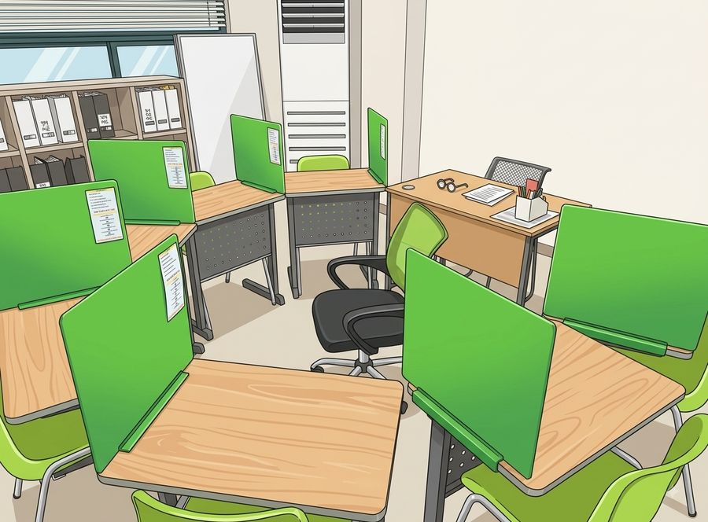

학생은 각자 자기 교재를 풉니다.
지점 안내
| 주소 | 서울 강서구 양천로67길 15 한희빌딩 2층 202호 와와학습코칭학원 등촌역 2번출구 직진 500미터 염창중앙교회옆건물, 강서구 염창동 242-11 한히빌딩 5층 |
|---|---|
| 주변 | 염창초등학교 인근 |
| 수업 과목 | 국어초4~중3영어초4~고3수학초4~고2과학중1~고1 |
| 수업 시간 | 평일 오후 3시 이후 · 토요일만 가능 상담 예약제 · 셔틀버스 없음 · 수업비는 아래 수강료 안내 참고 |
오시는 길
와와의 수업 방식
칠판·판서로 진도를 나가는 강의식 수업이 아니라, 학생마다 다른 개별 진도 수업입니다. 정해진 개강일이 없어 이번 달 중간에라도 시작할 수 있고, 주당 횟수와 교재, 커리큘럼도 학생마다 다르게 짭니다. 같은 교실에 앉아 있어도 각자 다른 단원을 공부하는 이유입니다.
한 가지는 분명히 해 두겠습니다. 이 수업은 과목 수업입니다. 국어·영어·수학·과학 각 과목을 그 과목 선생님이 소수 인원으로 가르치고, 그 위에 공부 방법과 습관을 만드는 학습코칭이 함께 갑니다. 설명을 들을 때는 아는 것 같다가도 혼자 풀면 막히는 경우가 많아서, 학생이 직접 푸는 시간을 길게 잡습니다.
- 시험 기간에는 3~4주 전부터 학교별 내신 대비 체제로 들어갑니다.
- 기초가 부족하면 기초부터, 여유가 있으면 상담을 거쳐 심화나 연계학습까지 나갈 수 있습니다.
- 지점에 따라 개설 과목과 대상 학년이 달라서, 정확한 내용은 상담에서 확인해 주세요.
초초등부
초등 고학년은 중학교 내신의 기초를 만드는 시기입니다. 연산, 어휘 같은 기본기를 학기마다 점검하고, 부족하면 학년을 거슬러 올라가 메웁니다. 하루 학습량을 기록하게 해서 공부 습관을 만드는 데 비중을 둡니다.
과목별 수업 안내
염창동에서 듣는 과목별 수업 내용과 시험 대비 방식은 과목 이름을 누르면 볼 수 있습니다.
관리 학교
염창점 학생들이 다니는 학교입니다. 학교 이름을 누르면 그 학교 기준의 시험 대비 안내가 나옵니다. 목록에 없는 학교도 인근이면 수업할 수 있으니 상담 때 말씀해 주세요.
영상으로 보는 와와

자주 묻는 질문
강의식 수업인가요?
아닙니다. 선생님이 앞에서 설명하고 학생이 받아 적는 방식이 아니라, 학생이 직접 풀고 선생님이 개별로 봐 주는 방식입니다. 공부 습관을 잡는 것까지 수업에 포함됩니다.
상담은 어떻게 신청하나요?
수업료는 어떻게 되나요?
학년별 금액은 아래 수강료 안내 표에 교육청 등록 기준으로 올려 두었습니다. 주당 횟수와 시간은 상담에서 학생에 맞춰 정합니다.
중간에 등록해도 진도를 따라갈 수 있나요?
네. 반 진도가 따로 없어서 언제 시작해도 손해가 없습니다. 등록 첫 주에 진단을 하고 그 결과에 맞춰 교재와 시작 단원을 정합니다.